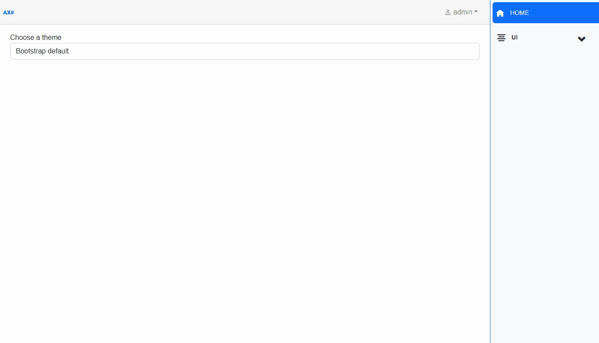

AXOpen.Themes
There is a way to change the look of the application by creating and using modified bootstrap files.
1. Modifying bootstrap
Each theme is a separate bootstrap file. To get the desired color theme, bootstrap's variables need to be modified before compilation.
Example of a file with modified variables:
// scss-docs-start theme-color-variables
$primary: #0A6105 !default;
$secondary: #13c70e !default;
$success: #0e9e0a !default;
$info: #F7F06D !default;
$warning: #ff8a00 !default;
$danger: #D33E43 !default;
$light: #f0f1ee !default;
$dark: #021301 !default;
// scss-docs-end theme-color-variables
2. Compiling bootstrap
Compile these files using the sass compiler:
3. Using a theme
The custom compiled bootstrap files are stored in the wwwroot\css\custom folder. Add your custom compiled bootstrap to this folder. In order to be able to switch to your newly created theme, you need to add the name of the theme to the supportedThemes array:
private string defaultThemeColor = "Bootstrap";
private string[] supportedThemeColors = new[]
{
"Bootstrap",
"MTS",
"Tropical",
"Jupiter"
};
Upon selecting a new theme, redirection to the themeColor uri is triggered:
NavigationManager.NavigateTo($"/themeColor?themeColor={_themeColor}", true);
Upon navigating to the themeColor uri, the ChangeThemeColor method of the ThemeColorController (an API controller) is called:
public async Task<ActionResult> ChangeThemeColor([FromQuery] string themeColor)
{
Response.Cookies.Append("ThemeColor", themeColor);
return Redirect("/");
}
This method creates a cookie with the name ThemeColor and the value of the selected theme. The cookie is then used to determine which stylesheet to use. The cookie expires after the browser session ends.
In the _Host.cshtml file, the css file of the selected theme is loaded based on the value of the theme cookie:
@switch (Request.Cookies["ThemeColor"])
{
case "MTS":
<link rel="stylesheet" href="~/css/custom/mts.css" />
break;
case "Tropical":
<link rel="stylesheet" href="~/css/custom/tropical.css" />
break;
case "Jupiter":
<link rel="stylesheet" href="~/css/custom/jupiter.css" />
break;
default:
break;
}
Make sure that the string name of your theme in supportedThemes array file matches with the correct case string in the switch statement in the _Host.cshtml file. In case of an unknown theme name from the ThemeColor cookie or when the app is opened for the first time (the cookie has not been created yet), the default bootstrap theme is loaded.
Theme changes in action:

Change dark/light theme
If you change the theme to dark/light, redirection to the theme uri is triggered:
NavigationManager.NavigateTo($"/theme?theme={_theme}", true);
Upon navigating to the theme uri, the ChangeTheme method of the ThemeController (an API controller) is called:
public async Task<ActionResult> ChangeTheme([FromQuery] string theme)
{
Response.Cookies.Append("Theme", theme);
return Redirect("/");
}
This method creates a cookie with the name Theme and the value of the selected theme. The cookie expires after the browser session ends.
In the _Host.cshtml file, the data-bs-theme is set based on the value of the theme cookie:
<html lang="en" data-bs-theme="@(Request.Cookies["Theme"] == "dark" ? "dark" : "light")">
This theme change is implemented in bootstrap and if you have correct set colors it will be working as expected.